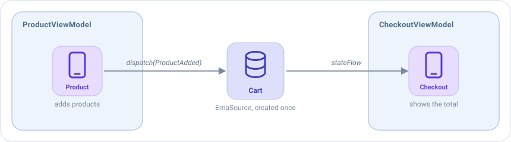

EmaSource¶
An EmaSource is the engine of Emanate: it holds a state, receives actions and runs the middlewares, reducers and
side effects that handle them. Every EmaViewModel has one inside.
Most apps only need ViewModels. An EmaSource is for the cases where you want that same engine without a screen: a state
that several screens share, or logic that has nothing to do with the UI. It can also be the base of a custom
ViewModel built from scratch, when the behavior of a standard EmaViewModel doesn't fit what you need.
ViewModel or EmaSource?¶
An EmaSource has the same pieces as a ViewModel. What changes is everything around them:
EmaViewModel |
EmaSource |
|
|---|---|---|
| Middlewares, reducers, side effects, broadcasts, plugins | Yes | Yes |
| Who creates it | Its screen, once | You |
| The initializer and the lifecycle, as actions | Yes | No: it only receives the actions you send it |
| Logs of every action | Automatic | If you add them |
| When it is closed | When its screen is closed | When you call close() |
| Use it for | A screen | A state that is not a screen, or a custom ViewModel built from scratch |
Use an EmaSource when the state doesn't belong to one screen, for example:
- A shopping cart that the product screens fill and the checkout screen shows.
- A music player that keeps playing while the user moves between screens.
- A queue of downloads that runs in the background.
- A ViewModel of your own: wrap an
EmaSourcein your class and expose only what your screen needs, without the lifecycle of anEmaViewModel.
Creating an EmaSource¶
Create it with EmaSource(...): the initial state, and the same blocks as the setup of a ViewModel.
data class CartState(val products: List<Product> = emptyList()) : EmaState {
val total get() = products.sumOf { it.price }
}
sealed interface CartAction : EmaAction {
data class ProductAdded(val product: Product) : CartAction
data class ProductRemoved(val product: Product) : CartAction
}
fun cartSource() = EmaSource<CartState, CartAction, EmaEvent.EMPTY>(CartState()) {
reducers {
add<CartAction> { action ->
when (action) {
is CartAction.ProductAdded -> state.copy(products = state.products + action.product)
is CartAction.ProductRemoved -> state.copy(products = state.products - action.product)
}
}
}
}
Using it¶
| To | Call |
|---|---|
| Send an action | cart.dispatch(CartAction.ProductAdded(product)) |
| Read the current state | cart.state |
| Follow the state | cart.stateFlow.collect { state -> ... } |
| Follow the events | cart.eventFlow, and cart.consumeEvent(event) once each one is handled |
| Stop it | cart.close() |
close() processes the actions still pending and then cancels the work of the EmaSource. An EmaSource has no screen that
closes it, so close it yourself when it isn't needed anymore. An EmaSource created once for the whole app, like the cart,
can live as long as the app.
Example: a cart shared by two screens¶
The cart is created once, for example as a single of your dependency injection, and the ViewModels of two screens
receive it in their constructor:

The product screen sends actions to the cart from a side effect:
class ProductViewModel(private val cart: EmaSource<CartState, CartAction, EmaEvent.EMPTY>) :
EmaViewModel<ProductState, ProductAction, ProductEvent>(ProductState()) {
override fun setup() = source {
sideEffects {
add<ProductAction.AddClicked> { cart.dispatch(CartAction.ProductAdded(state.product)) }
}
}
}
The checkout screen follows the state of the cart, and turns every change into an action of its own:
class CheckoutViewModel(private val cart: EmaSource<CartState, CartAction, EmaEvent.EMPTY>) :
EmaViewModel<CheckoutState, CheckoutAction, CheckoutEvent>(CheckoutState()) {
override fun setup() = source {
reducers {
add<CheckoutAction.CartChanged> { action -> state.copy(total = action.total) }
}
sideEffects {
// Runs while the screen exists: it is cancelled when the ViewModel is closed
add<EmaInitializer> {
cart.stateFlow.collect { cart -> dispatch(CheckoutAction.CartChanged(cart.total)) }
}
}
}
}
Each screen keeps its own state, and the cart is the only place where the products are.
Logs¶
A ViewModel logs every action by itself, but an EmaSource doesn't. To see its actions with the state before and after
them, add loggerMiddleware as its last middleware:
fun cartSource() = EmaSource<CartState, CartAction, EmaEvent.EMPTY>(CartState()) {
middlewares(MiddlewarePosition.Last) {
add(loggerMiddleware(tag = "Cart", logger = EmaLogger.Println))
}
// ...
}
Configuration¶
An EmaSource uses the configuration of the application (the one set with Emanate.init), like
a ViewModel does. To give one EmaSource its own, pass it as the second parameter:
EmaSource<CartState, CartAction, EmaEvent.EMPTY>(CartState(), configuration) { ... }
That configuration decides, among other things, the dispatcher where the EmaSource runs (main by default) and what
happens when an exception is thrown.
Tests¶
emanate-test works with an EmaSource like with a ViewModel. Call useTestConfiguration() before
creating the EmaSource, so it runs on the dispatcher of the test. Then call record() on the EmaSource before sending the
first action, and the recorder keeps every action, state and event in order, so you can assert on them. For example,
a test of the cart above could look like this:
val recorder = cart.record()
cart.dispatch(CartAction.ProductAdded(product))
recorder.assertState { it.products == listOf(product) }